TECHVESTVENTURES DAILY RISK ALERTS — Emergent News Digest — Nov 19, 2026, 9:00 AM EST ALL RISK REPORTS click TVV Risk Center
TVV RESEARCH DIGEST — November 19, 2026 — 13 desks
Prioritized Risk Summary November 19, 2026
| Sections Ranked for Importance Today | |
|---|---|
| GEOPOLITICS | Trump-Xi-Putin peace declaration skips Ukraine and Iran; Iran claims Hormuz mine hits |
| ECONOMY | Fed hike odds 92% for December; Waller floats a half-point shock |
| AI BOOST | Anthropic debuts as ANT after a record $81.3B IPO at $1.5T |
| COMMODITY | Gold at 14-month low near $3,716; copper miners lose $186B in a month |
| TERROR | Reported Iran dirty-bomb planning against Washington; Rubio sees no imminent threat |
| PREDICTIONS | Iran blockade-end odds by Dec 31 drop to 18% from 33% |
| DERIVATIVES | OTC derivatives notional $845T, near record; Bitcoin down 23% in a month |
| STOCKS | S&P 500 down five sessions; Nasdaq futures +2% on Anthropic pricing |
| INFRASTRUCT | Texas resumes data-center permits; CoreWeave still 65% below 2026 high |
| HEALTH | Ebola: 442 new cases, 239 deaths in a week; US flu positivity 11.3% |
| TECHNOLOGY | Tech CEOs skip APEC; Palo Alto buys Applied Compute for $4.5B |
| SPACE | Sun's peak flare this week M1.7 on Nov 17; no X-class flares |
| QUAKES | No qualifying deadly M6+ quake since Nov 16 |
1. Major Geopolitical Conflict Developments
- ★ The Shenzhen trilateral: Trump, Xi and Putin met for about 80 minutes at Kylin Villa on the APEC sidelines Thursday, their first three-way summit. The "Declaration toward Peace" released by the Kremlin and Xinhua has four points: UN reform, more production and supply of refined petroleum products, respect for state officials' immunity with a warning that the International Criminal Court must not abuse its jurisdiction, and a dialogue on reducing nuclear risks and proliferation. It does not mention Ukraine, Iran, Taiwan or North Korea, and no trade or tariff terms were announced. Reuters: the Asia swing produced "few tangible victories" and raised fresh questions among US allies about Trump's closeness to Putin. Kremlin · Reuters · Euronews
- ★ What was said in the room: Trump said the three are "uniquely positioned to discuss how to reduce the number of nuclear weapons on Earth" and, on Iran, "We're not going to let Iran have a nuclear weapon"; he said he and Putin had a "long discussion" on Ukraine. Xi urged the three to "abandon Cold War mentality" and avoid decoupling. Afterward Kremlin spokesman Dmitry Peskov said Ukraine was not "the central topic." Polymarket word markets resolved YES on Trump saying nuclear, Iran and Ukraine, while Taiwan, NATO and Zelensky mentions faded below 5% (see graph). BBC · Euronews · Polymarket
- ★ No Kim cameo: no official report of any Kim Jong-un role in Shenzhen; the Kremlin had said Putin would meet Kim if he came, and JoongAng Daily reported Kim touring a naval university on Nov 19. Polymarket odds of a Trump–Kim meeting by Nov 30 fell to 3% from a 17% peak (see graph); bettors see the North Korea track as off the table this month. Polymarket · AP
- ★ Iran blockade: loosening or tightening? Conflicting claims. A Foreign Policy report cited in news roundups says Trump "quietly loosens" the blockade, but no official US statement confirms it. The hard news points the other way: the Joint Maritime Information Center's Nov 18 advisory rates the threat SEVERE and extends blockade suspicion to ships that take Iranian cargo by ship-to-ship transfer at sea; humanitarian vessels now need prior approval with crew passport scans. Polymarket odds of a US announcement ending the blockade by Dec 31 fell to 18% from 33% a week ago (see graph in PREDICTIONS). World Ports Organization / JMIC · Polymarket
- ★ Hormuz mine claims, unverified: Iran's army says three "violating" tankers that had switched off navigation systems hit naval mines east of the strait Wednesday and caught fire; the IRGC Navy separately claims two supertankers carrying over 4 million barrels struck mines and are burning. Neither claim has been independently confirmed. ADNOC said one of its vessels was attacked in the strait Tuesday evening, injuring 11 crew with one missing, and UKMTO reported a tanker's engine room hit by an "unknown projectile" near Khasab, Oman, crew safe. The USS George Washington has left the region, leaving two US carriers. Anadolu · Anadolu · Xinhua · ABC News
- ★ Ukraine: a third Ukrainian strike in four days halted rail traffic on the Kerch Bridge to Crimea, and Putin vowed a "far more painful" response. Russian attacks killed 4 and injured 36 across Ukraine over the past day, including two children. Ukraine's allies are meeting in Berlin on air defense, energy and financing. AP · Kyiv Independent
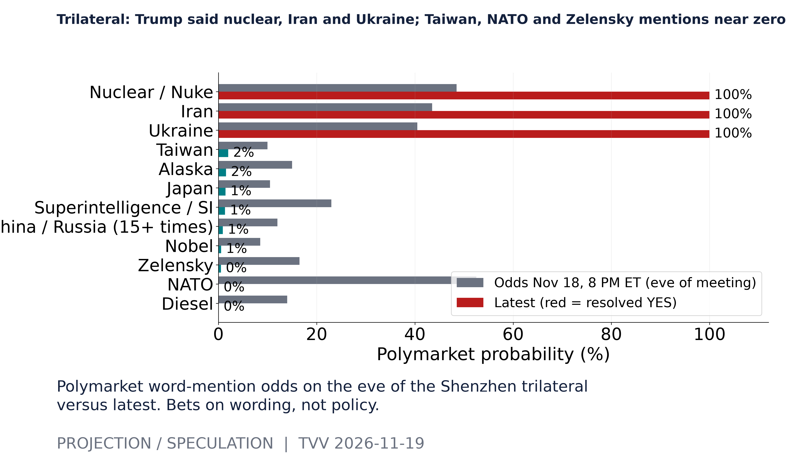
Trilateral: Trump said nuclear, Iran and Ukraine; Taiwan, NATO and Zelensky mentions near zero. Polymarket word-mention odds on the eve of the Shenzhen trilateral versus latest. Bets on wording, not policy. [Projection/Speculation; data as of 2026-11-19 07:42 ET] Source: polymarket.com data page
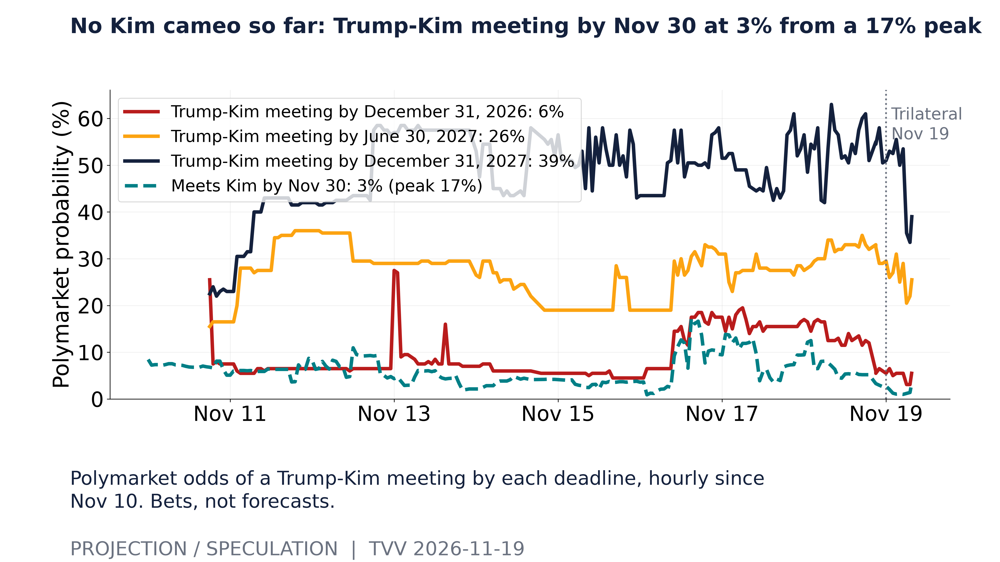
No Kim cameo so far: Trump-Kim meeting by Nov 30 at 3% from a 17% peak. Polymarket odds of a Trump-Kim meeting by each deadline, hourly since Nov 10. Bets, not forecasts. [Projection/Speculation; data as of 2026-11-19 07:42 ET] Source: polymarket.com data page
2. Major Terror / Security Incidents
- ★ Dirty-bomb report: CNN reported US intelligence assessments on the possibility that Iran may be planning an attack involving a so-called dirty bomb in Washington. Secretary of State Marco Rubio said he does not think there is any imminent threat to the capital. In Shenzhen, Trump told Fox News there is "indication that Iran is looking at gases, looking at bio, because we've shut them out with the nuclear." The US reissued security warnings to Americans in the Gulf. Times of Israel · ABC News
- ★ Plots foiled in Europe and the US: North Macedonia and Greek intelligence say they foiled an Iranian-linked plot to assassinate an Israeli executive staying in Greece, directed by an Iranian national tied to Iran's security services; a 23-year-old in Copenhagen was charged with terrorism after allegedly gathering addresses of Jewish residents and setting fire to a building; and a Palatine, Illinois, teenager faces a 27-count terrorism indictment over an alleged mass-shooting plot at an Aurora Hindu temple. Counter Extremism Project
- ★ Cyber exposure is spread wide: CISA added 113 actively exploited flaws to its catalog in the last 90 days; the top vendor, Cisco, accounts for only 7 of them, ahead of Microsoft 6, Linux 6, Google 5 and Citrix 5 (see graph). Defenders face many fronts at once rather than one dominant target. CISA KEV
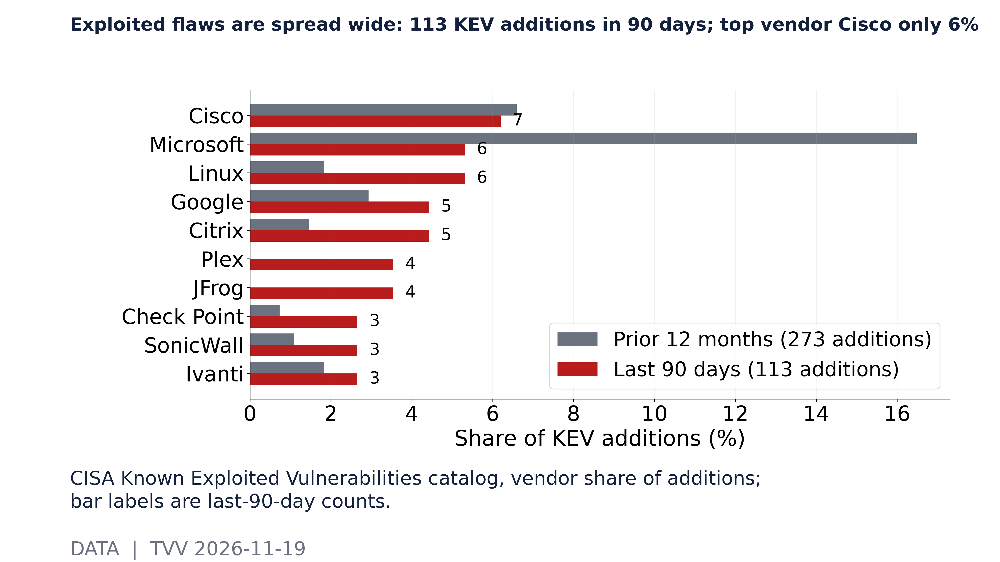
Exploited flaws are spread wide: 113 KEV additions in 90 days; top vendor Cisco only 6%. CISA Known Exploited Vulnerabilities catalog, vendor share of additions; bar labels are last-90-day counts. [Data; data as of 2026-11-18] Source: cisa.gov data page
3. Earthquakes and Eruptions
- ★ No qualifying M6.0+ earthquake with significant casualties or damage since Nov 16: the two M6+ events since then were an M6.6 offshore 148 km WSW of Tual, Indonesia, and an M6.1 on the remote Pacific-Antarctic Ridge, with no damage reported. Over 12 months the USGS logged 2,024 M5+ quakes worldwide, 141 of them M6+, with Indonesia leading at 258 M5+ events (see graph). USGS
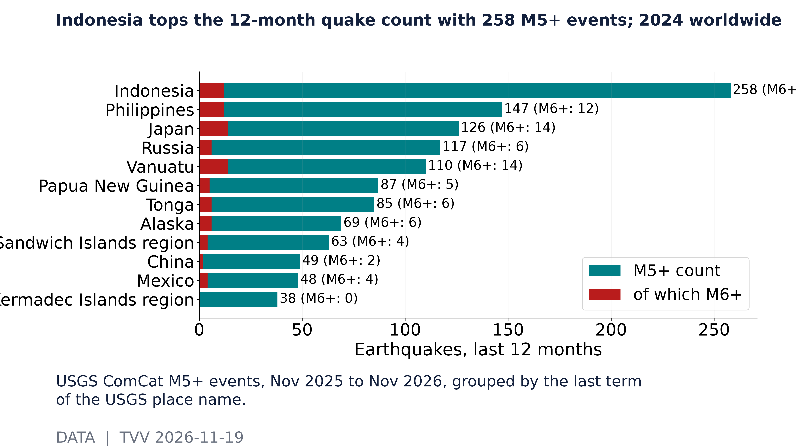
Indonesia tops the 12-month quake count with 258 M5+ events; 2024 worldwide. USGS ComCat M5+ events, Nov 2025 to Nov 2026, grouped by the last term of the USGS place name. [Data; data as of 2026-11-19] Source: earthquake.usgs.gov data page
4. Solar / Space Weather
- ★ The Sun over the past week: GOES X-ray flux peaked at an M1.7 flare on Nov 17 at 4:39 PM ET, with two crossings of the M-class line and no X-class flares (see graph). Real-time flare classes are preliminary until NOAA finalizes them. NOAA SWPC
- ★ Long-horizon warning: magnetic north keeps drifting toward Siberia, and no one can predict the timing of a sudden geomagnetic shift. Michael's own view: 2035 at the earliest, with critical earth changes along the way. NOAA NCEI
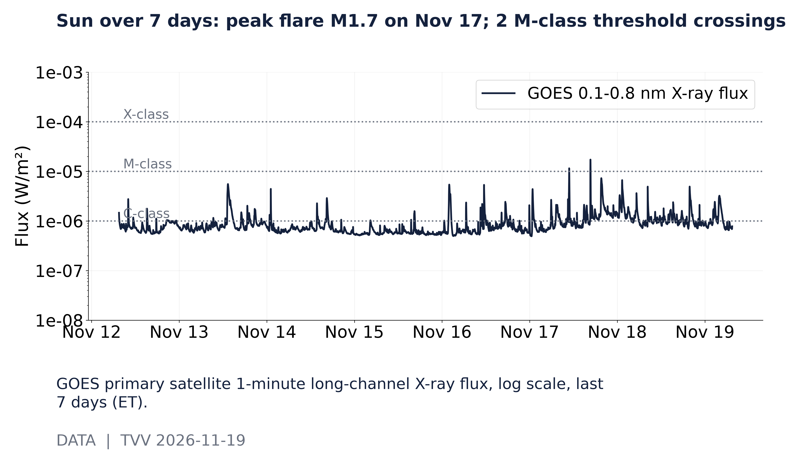
Sun over 7 days: peak flare M1.7 on Nov 17; 2 M-class threshold crossings. GOES primary satellite 1-minute long-channel X-ray flux, log scale, last 7 days (ET). [Data; data as of 2026-11-19 07:28 ET] Source: services.swpc.noaa.gov data page
5. Critical Infrastructure / Transportation Disruptions
- ★ Data-center permits restart: Texas environmental regulators said they have gathered information for the community impact review of pending data-center projects and have resumed their normal permit review process. One Point BFG's Peter Boockvar said the news, together with the Anthropic IPO, "has the futures rallying sharply this morning." CNBC
- ★ Damage to the builders: from their 2026 highs, CoreWeave is down 65%, Nebius 63%, Oracle 54%, Vertiv 48% and Nvidia 37%, against 13% for the Nasdaq-100 (see graph). The debt-funded data-center names have fallen hardest, though CoreWeave and Nebius rose more than 5% pre-market Thursday. Yahoo Finance · Reuters via Investing.com
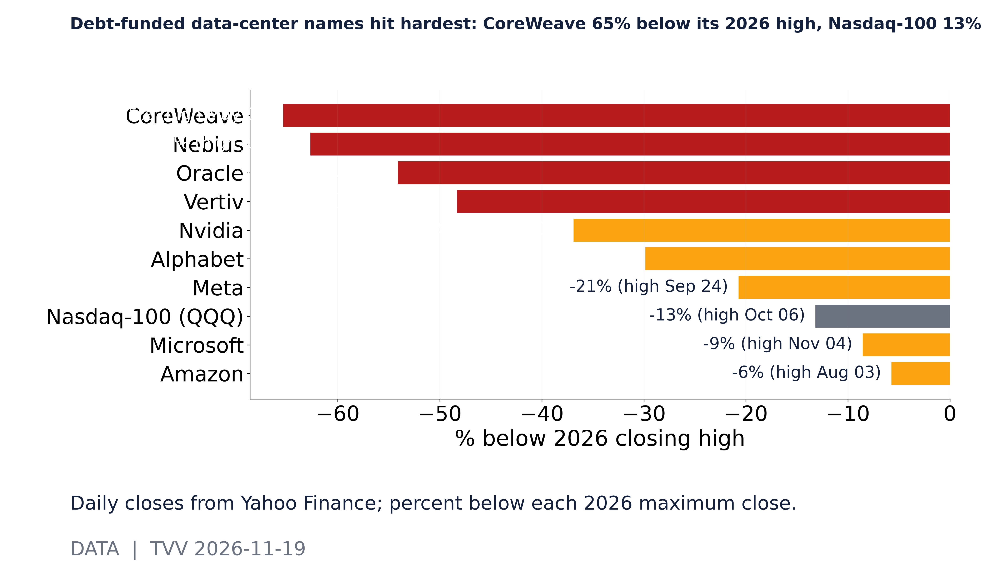
Debt-funded data-center names hit hardest: CoreWeave 65% below its 2026 high, Nasdaq-100 13%. Daily closes from Yahoo Finance; percent below each 2026 maximum close. [Data; data as of 2026-11-18] Source: query1.finance.yahoo.com data page
6. Econo-Metrics
- ★ Rate-hike risk now rivals AI as the market driver: Fed Governor Christopher Waller said the Fed may need to "shock people" with a half-point hike at the Dec 8–9 meeting because inflation is worsening and spreading; he would accept a quarter point only with a clear signal of another in January. The October minutes show nearly all officials saw a need for more increases if the economy performs as projected, with some worried about AI-driven inflation. CNBC · CNBC
- ★ What bettors price: Polymarket gives about 92% for a 25 bp December hike and 6% for 50 bp or more, and 62% for another hike in January; the easing path (pause, pause, cut) collapsed to 3% from 22% on Nov 13, while three straight hikes is 36% (see graph). LSEG data put the 50 bp December chance near 8%. Near term: markets expect at least two more hikes before spring. Polymarket · Reuters via Investing.com
- ★ The curve: the 2-year Treasury yield is 4.80% versus 3.60% a year ago, the 10-year 5.10% and the 30-year 5.46%, with the 10-year minus 2-year spread at 30 bp (see graph). FRED
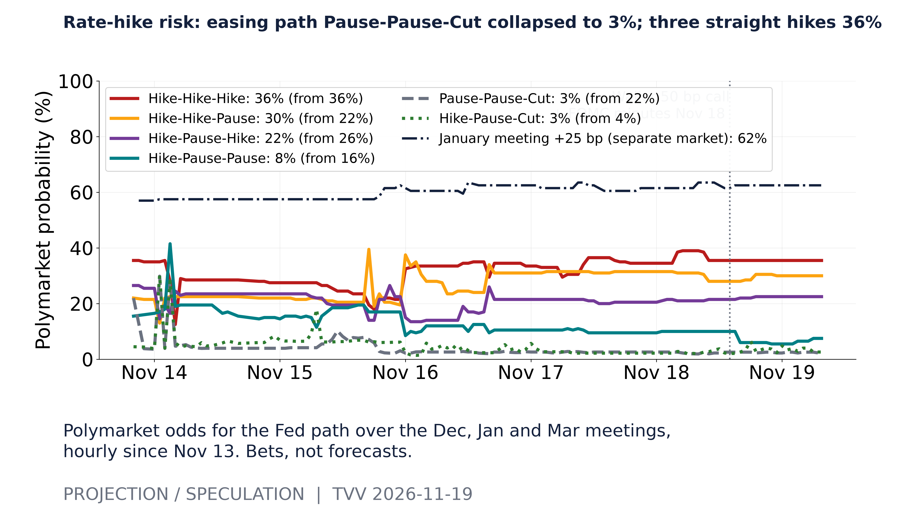
Rate-hike risk: easing path Pause-Pause-Cut collapsed to 3%; three straight hikes 36%. Polymarket odds for the Fed path over the Dec, Jan and Mar meetings, hourly since Nov 13. Bets, not forecasts. [Projection/Speculation; data as of 2026-11-19 07:42 ET] Source: polymarket.com data page
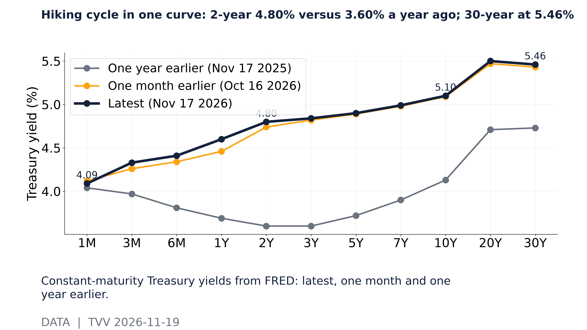
Hiking cycle in one curve: 2-year 4.80% versus 3.60% a year ago; 30-year at 5.46%. Constant-maturity Treasury yields from FRED: latest, one month and one year earlier. [Data; data as of 2026-11-17] Source: fred.stlouisfed.org data page
7. Epidemic / Bio-Metrics
- ★ Ebola (Bundibugyo) in DR Congo: WHO's Nov 15 situation report counts 11,432 confirmed cases and 5,593 confirmed deaths across 68 health zones in eight provinces, with 442 new cases and 239 deaths in the week of Nov 9–15; Kenya has nine linked cases and two deaths, and Nigeria one imported case. Transmission remains high. WHO Africa · WHO
- ★ US respiratory season is starting: CDC lab data show influenza test positivity at 11.3% for the week ending Nov 7, against 1.9% a year earlier, with COVID-19 at 3.2% and RSV 1.6% (see graph). COVID variant SV.2.4 and China surge claims remain unconfirmed by WHO, Hong Kong CHP, Taiwan CDC or China CDC data. CDC
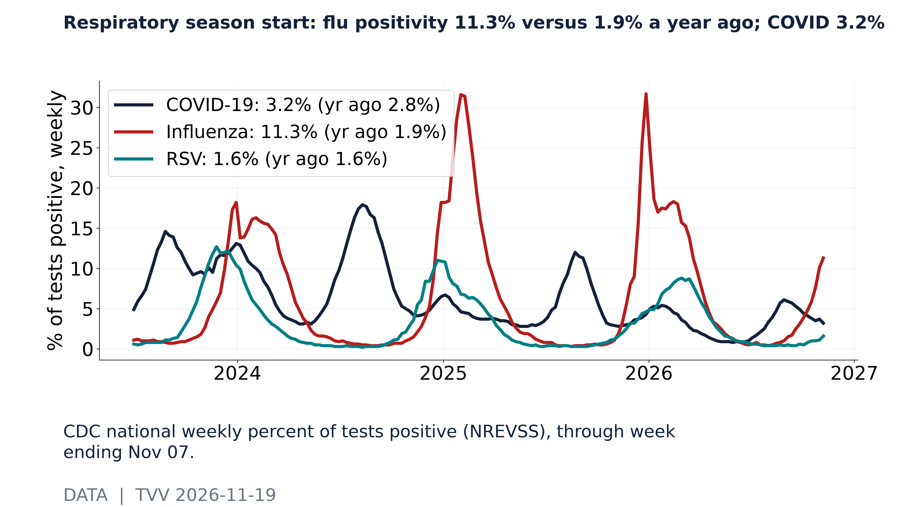
Respiratory season start: flu positivity 11.3% versus 1.9% a year ago; COVID 3.2%. CDC national weekly percent of tests positive (NREVSS), through week ending Nov 07. [Data; data as of 2026-11-07] Source: data.cdc.gov data page
8. Gold and Silver and Commodities
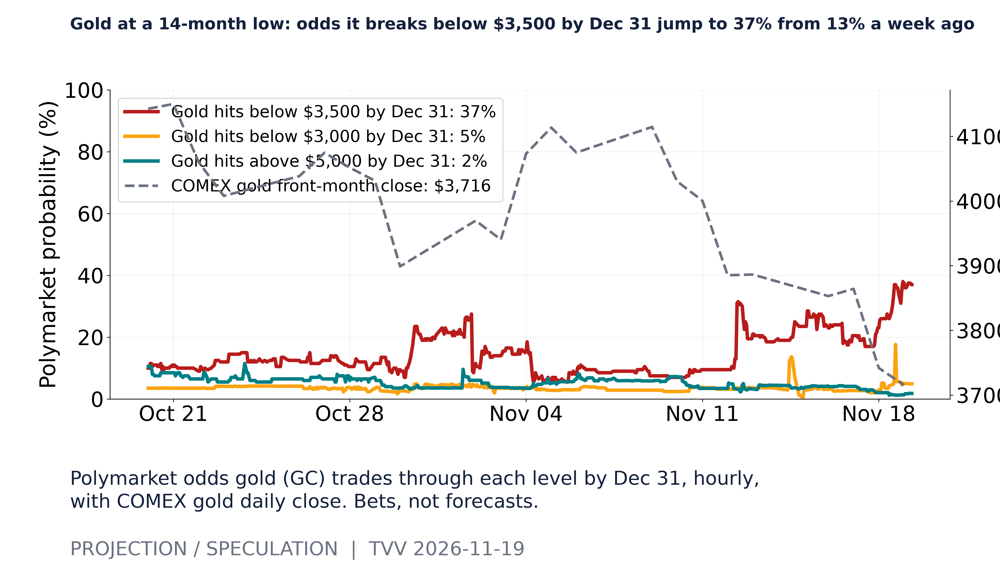
Gold at a 14-month low: odds it breaks below $3,500 by Dec 31 jump to 37% from 13% a week ago. Polymarket odds gold (GC) trades through each level by Dec 31, hourly, with COMEX gold daily close. Bets, not forecasts. [Projection/Speculation; data as of 2026-11-19 07:42 ET] Source: polymarket.com data page
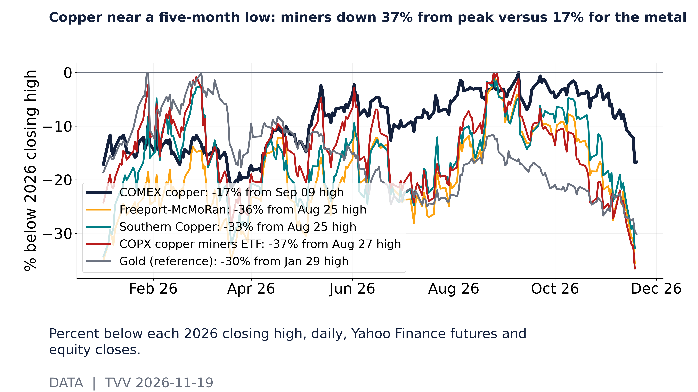
Copper near a five-month low: miners down 37% from peak versus 17% for the metal. Percent below each 2026 closing high, daily, Yahoo Finance futures and equity closes. [Data; data as of 2026-11-19] Source: query1.finance.yahoo.com data page
9. Stock Averages and Nasdaq Major Movers
- ★ Wednesday's close: the S&P 500 fell 0.23% to 7,323.63, its fifth straight loss, as the hawkish Fed minutes reversed early gains; the Dow lost 561 points to 50,198.17 and the Nasdaq-100 rose 0.42% to 27,116.26. Lianhe Zaobao · Reuters via Investing.com
- ★ Thursday pre-market rebound on the Anthropic pricing: at 7:18 AM ET Nasdaq-100 futures were up 2.1%, S&P 500 futures 1.2% and Dow futures 0.6%. Nvidia rose about 1.7% after five straight losing sessions, Micron about 5%, and Palo Alto Networks about 10% after raising its forecast, lifting CrowdStrike, Cloudflare, Okta and Zscaler 5–6%. Reuters via Investing.com · Investing.com
- ★ The 30-day hike trade across assets: dollar index +2.0%, S&P 500 −4.8%, Nasdaq-100 −8.2%, gold −10.3%, copper −13.7%, Brent −17.2%, silver −22.2%, Bitcoin −23.2% and Nvidia −30.5% (see graph). Only the dollar and long Treasuries gained. Yahoo Finance
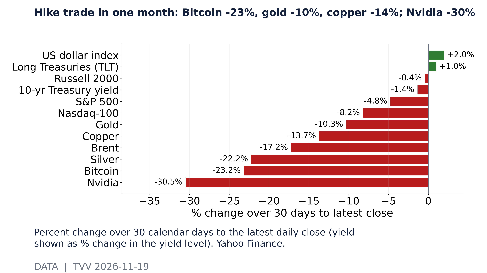
Hike trade in one month: Bitcoin -23%, gold -10%, copper -14%; Nvidia -30%. Percent change over 30 calendar days to the latest daily close (yield shown as % change in the yield level). Yahoo Finance. [Data; data as of 2026-11-18] Source: query1.finance.yahoo.com data page
10. Polymarket and Kalshi Sentiment Highlights
- ★ Iran blockade odds: Polymarket gives 5% that the US announces an end to the Iran naval blockade by Nov 30, 18% by Dec 31 (33% a week ago) and 50% by Mar 31 (see graph). Bettors do not believe the loosening reports; a coin flip on an end only by spring. Polymarket
- ★ Summit odds that resolved: Polymarket's "who will Trump meet by Nov 30" already settled YES for Xi and Putin; Rubio and Bessent resolved YES as APEC companions, while Musk's odds of joining fell to 24% from 94% a week ago (see TECHNOLOGY graph). Polymarket · Polymarket
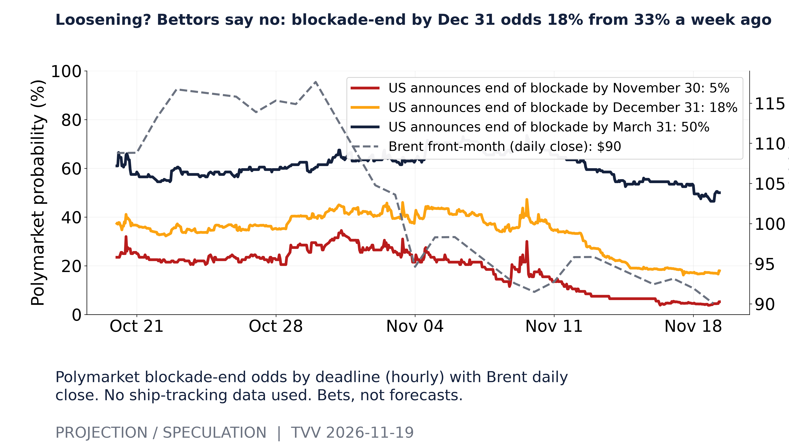
Loosening? Bettors say no: blockade-end by Dec 31 odds 18% from 33% a week ago. Polymarket blockade-end odds by deadline (hourly) with Brent daily close. No ship-tracking data used. Bets, not forecasts. [Projection/Speculation; data as of 2026-11-19 07:42 ET] Source: polymarket.com data page
11. Tech-Metrics
- ★ The CEO delegation that wasn't: Polymarket odds of tech chiefs joining Trump at APEC collapsed: Musk 24% (94% a week ago), Tim Cook 1% (70%), Altman 0.7%, Zuckerberg 0.4%, Huang 0.2% (see graph). It was a security and trade cabinet trip, and no chip or AI agreement came out of the trilateral. Polymarket
- ★ Security spending as a tell: Palo Alto Networks raised its annual revenue forecast and agreed to buy AI startup Applied Compute for $4.5 billion, saying a heightened threat environment is pushing customers toward broader security products; the stock rose about 10% pre-market. Investing.com
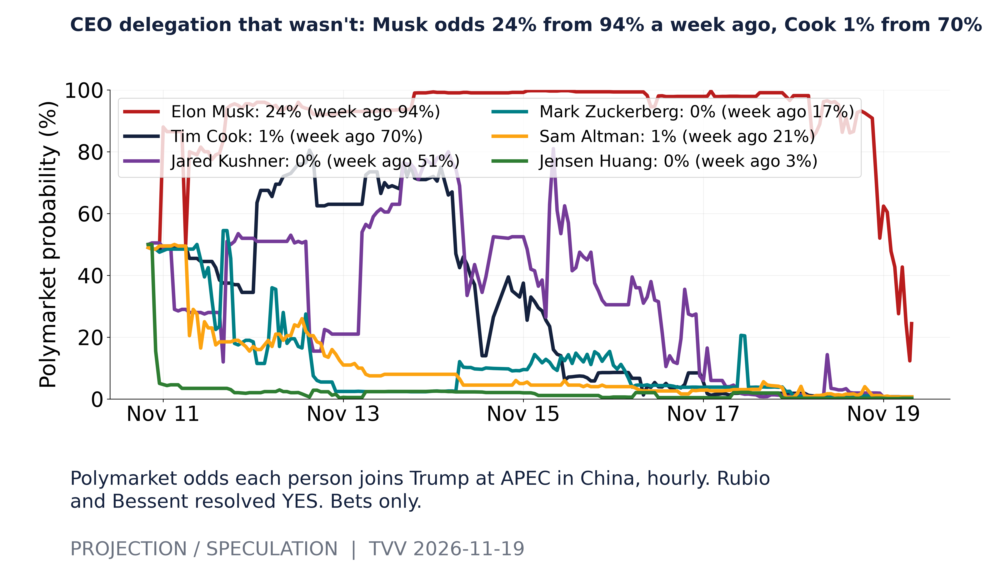
CEO delegation that wasn't: Musk odds 24% from 94% a week ago, Cook 1% from 70%. Polymarket odds each person joins Trump at APEC in China, hourly. Rubio and Bessent resolved YES. Bets only. [Projection/Speculation; data as of 2026-11-19 07:42 ET] Source: polymarket.com data page
12. AI Hypergrowth Risks
- ★ Anthropic lists today: it priced its IPO at $83 a share, above the $70–78 range, selling 980 million shares to raise about $81.3 billion, the largest IPO on record, ahead of SpaceX's in June, at a fully diluted value near $1.5 trillion; trading starts on Nasdaq as ANT after the opening IPO cross. AP: the pricing signals investor enthusiasm even amid the Nvidia CEO departure and AI-bubble worries, "but the bigger test will be how Anthropic fares on the stock market." Anthropic · AP · CNBC
- ★ Political distance: Polymarket gives only 5% that Dario Amodei meets Trump by Nov 30 (14% a week ago), against 60% for Musk and 22% for Altman (see graph). CNBC notes voters' "stinging rebuke of AI" in the midterms as a backdrop to the debut. Polymarket · CNBC
- ★ Low-hire, low-fire jobs market: the JOLTS hiring rate is 3.4% versus 4.0% when ChatGPT launched in November 2022, while layoffs stay at 1.0% and quits 2.1% (see graph). Entry-level workers feel low hiring first; the series does not isolate AI's role. BLS via FRED
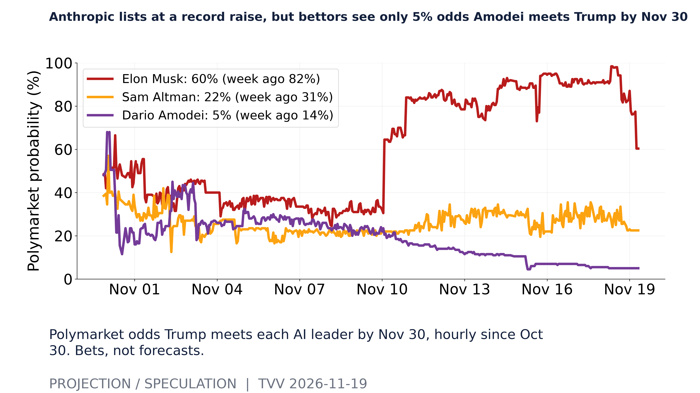
Anthropic lists at a record raise, but bettors see only 5% odds Amodei meets Trump by Nov 30. Polymarket odds Trump meets each AI leader by Nov 30, hourly since Oct 30. Bets, not forecasts. [Projection/Speculation; data as of 2026-11-19 07:42 ET] Source: polymarket.com data page
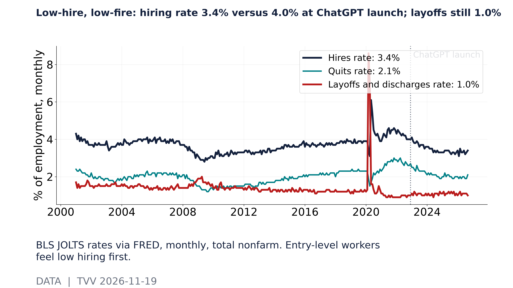
Low-hire, low-fire: hiring rate 3.4% versus 4.0% at ChatGPT launch; layoffs still 1.0%. BLS JOLTS rates via FRED, monthly, total nonfarm. Entry-level workers feel low hiring first. [Data; data as of 2026-09] Source: fred.stlouisfed.org data page
13. Finance Bubble Derivatives Risk
- ★ Global OTC derivatives: BIS counts $844.6 trillion notional outstanding at end-2025, just under the June 2025 record of $846 trillion and up from $699.5 trillion a year earlier; interest-rate contracts are $669.5 trillion (79%), and gross market value is $22.8 trillion (see graph). Notional overstates risk; gross market value tends to rise when rates move sharply, as in a hiking cycle. BIS
- ★ Crypto leverage under the hike trade: Bitcoin is down 23% in 30 days and broke below $63,000 after Waller's "shock" remark (see 30-day returns graph in STOCKS). Yahoo Finance
- ★ Data-center finance swings: the Anthropic pricing sent neoclouds CoreWeave and Nebius up more than 5% pre-market and IREN and Applied Digital about 6%, after drawdowns of up to 65% this year; these debt-funded names remain the most leveraged expression of the AI build-out. Reuters via Investing.com
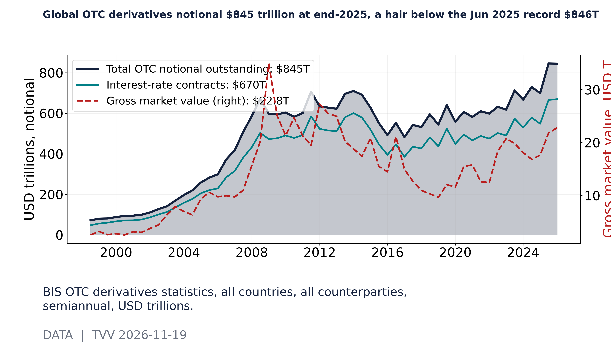
Global OTC derivatives notional $845 trillion at end-2025, a hair below the Jun 2025 record $846T. BIS OTC derivatives statistics, all countries, all counterparties, semiannual, USD trillions. [Data; data as of 2025-12-31] Source: stats.bis.org data page
Prioritized Risk Summary November 19, 2026
| Sections Ranked for Importance Today | |
|---|---|
| GEOPOLITICS | Trump-Xi-Putin peace declaration skips Ukraine and Iran; Iran claims Hormuz mine hits |
| ECONOMY | Fed hike odds 92% for December; Waller floats a half-point shock |
| AI BOOST | Anthropic debuts as ANT after a record $81.3B IPO at $1.5T |
| COMMODITY | Gold at 14-month low near $3,716; copper miners lose $186B in a month |
| TERROR | Reported Iran dirty-bomb planning against Washington; Rubio sees no imminent threat |
| PREDICTIONS | Iran blockade-end odds by Dec 31 drop to 18% from 33% |
| DERIVATIVES | OTC derivatives notional $845T, near record; Bitcoin down 23% in a month |
| STOCKS | S&P 500 down five sessions; Nasdaq futures +2% on Anthropic pricing |
| INFRASTRUCT | Texas resumes data-center permits; CoreWeave still 65% below 2026 high |
| HEALTH | Ebola: 442 new cases, 239 deaths in a week; US flu positivity 11.3% |
| TECHNOLOGY | Tech CEOs skip APEC; Palo Alto buys Applied Compute for $4.5B |
| SPACE | Sun's peak flare this week M1.7 on Nov 17; no X-class flares |
| QUAKES | No qualifying deadly M6+ quake since Nov 16 |
TECHVESTVENTURES ACTION-ALERT — November 19, 2026 see all graphs click TVV Risk Center
EDITOR — Michael Hentschel
Most news events require or spawn no action or reaction, some (but not many) are or become warnings. We draw attention to substantial lifestyle risks and market risks in particular, some created by Mid-Term Vote anxieties, Middle East tensions, vast over-indebtedness globally, and other events we track. Longer term but capable of causing sudden power surges as serious as the Carrington Event. Climate instability occasioned by long-term cyclical solar electro-magnetic flares, is becoming much more prominent and even more likely. New AI predictive analytics and pattern seekers are pointed in some of these directions, and we monitor imminent likelihood. Some readers might hedge and others might see opportunity. The above is not investment advice.